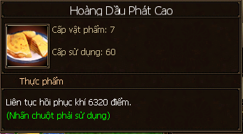
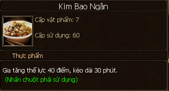

Nấu Nướng¶
Nấu nướng dùng các nguyên liệu từ kỹ năng Câu cá (phải qua sơ chế) hoặc nông sản từ kỹ năng Trồng trọt.

Cá câu được từ kỹ năng Câu cá phải qua chế biến trước khi nấu nướng
Học Nghề¶
- Đại Lý: NPC Đỗ Tử Phi (112, 155).
- Lạc Dương: NPC Lý Đại Chủy (236, 292).
- Tô Châu: NPC Trí Hóa (290, 269).
- Lâu Lan: NPC Mã Lan (213, 172).
- Thúc Hà Cổ Trấn: NPC Hác Thái (190, 146).
Thăng Cấp¶
- Cấp 1 - 5: tại các NPC dạy kỹ năng Nấu nướng.
- Cấp 5 - 10: NPC Đỗ Tử Bàn (45, 74; chữ Tửu trên bản đồ) trong thành thị bang hội.
Thực Đơn¶

Sơ Cấp phối phương nấu nướng mua tại Đại Lý - NPC Đỗ Tử Đằng (chữ Tửu trên bản đồ)

Sơ Cấp phối phương nấu nướng mua tại Lạc Dương - NPC Khương Lý (224, 296; chữ Tửu trên bản đồ)
Sơ Cấp phối phương nấu nướng mua tại Tô Châu - NPC Bao Thế Vinh (291, 266; chữ Tửu trên bản đồ)

Các công thức nấu ăn có thể mua trong thành thị bang hội tại NPC Đỗ Tử Bàn
| Cấp | Tên và công dụng | Cách thức |
|---|---|---|
| 1 | Sinh Thái Nhục Tùng (hồi khí) Nhục Ty Hương Cô (hồi máu) Tương Ngưu Nhục (hồi khí) Cô Thương Nhục (hồi khí) Tạc Hoàn Hoa Ngư (hồi khí) Khiếu Hóa Kê (hồi máu) Tửu Chưng Kê (+ nội thủ) Toan Lạp Ngư Phiến (+ ngoại thủ) Bánh Ngư Hương Gia (+ nội công) Tứ Hỷ Hoàn Tử (+ ngoại công) |
Sơ cấp phối phương tạp vật: cá 1 - 3 đã qua sơ chế |
| 1 | Lục Đậu Cao (hồi khí) Dầu Tiền (hồi máu) Chi Ma Bính (hồi khí) Khảo Ngọc Mễ (hồi máu) Dầu Diện Cân (hồi khí) Cẩm Sắc Sao Phạn (hồi máu) Quả Nhân Đậu Bì (+ Trí lực) Hồng Đậu Phạn (+ Thân pháp) Hoa Sinh Thang Viên (+ Thể lực) Nhất Phẩm Chúc (+ Nội lực) Mễ Chí Bính (+ Cường lực) |
Sơ cấp phối phương ngũ cốc: nông sản 1 - 3 |
| 4 | Quan Thang Bao (hồi khí) Kiêu Chấp Ngư Phiến (hồi máu) Lạp Thiêu Hương Hoa (hồi khí) Mã Nghĩa Thượng Thụ (hồi máu) Phấn Chưng Áp Nhục (hồi khí) Bát Trân Thuẫn Kê Thang (hồi máu) Bài Cốt Chúc (tăng nội thủ) Hồng Thiêu Giáp Ngư (tăng ngoại thủ) Từ Thái Thang (+ nội công) Hồng Muộn Hùng Trảo (+ ngoại công) |
Trung cấp phối phương tạp vật: cá 4 - 6 đã qua sơ chế |
| 4 | Hạnh Nhân Tô (hồi khí) Bánh Khoai (hồi máu) Thanh Minh Ba (hồi khí) Nhu Mễ Cao (hồi máu) Ba Tiêu Ham Phạn (hồi khí) Hương Cô Thái Bao (hồi máu) Tam Tiên Quyển (+ Trí lực) Từ Ba (+ Thân pháp) Diệp Nhi Ba (+ Thể lực) Đồng Tử Cao (+ Nội lực) Đào tô (+ Cường lực) |
Trung cấp phối phương ngũ cốc: nông sản cấp 4 - 6 |
| 7 | Hà Bao Tức Ngư (hồi 4920 khí) 
Ô Kê Thang (hồi 10310 máu) 
Hào Dầu Ngưu Nhục (hồi khí) Bão Tiêu Phụng Trào (hồi máu) Hồng Muộn Ngưu Nạm (hồi khí) Ngư Phúc Dương Nhục (hồi máu) Túy Phi Bạch Nhục (hồi khí) Triều Châu Thiện Bao (hồi máu) Đại Đế Bát Hải Sâm (+ 200 nội thủ) 
Hồng Đậu Thiêu Trư Thủ (+ ngoại thủ) Túy Bài Cốt (+ nội công) Nhục Hoàn Hồ Lạp Thang (+ ngoại công) |
Cao cấp phối phương tạp vật: cá 7 - 10 đã qua sơ chế |
| 7 | Hoàng Dầu Phát Cao (hồi 6920 khí) Tàm Đậu Ngân Ty Cao (hồi 13260 máu) 
Tứ Bảo Chi Ma Chúc (hồi khí) Cam Thảo Ý Mễ Bính (hồi máu) Ty Qua Diện Tuyến Thang (hồi khí) Bách Vị Thanh Ti Diện (hồi máu) Bánh Thiên Đao Tô Tuyết (hồi khí) Tiêu Hồn Ý Vị Cao (hồi máu) Thanh Tố Nhu Mễ Tử (+ 40 trí lực) 
Liên Tử Ý Mễ Canh (+ 40 thân pháp) 
Kim Bao Ngân (+ 40 thể lực) Bánh Hồng Đậu Bản Tử (+ 40 nội lực) 
Đề Ty Phát Cao (+ cường lực) |
Cao cấp phối phương ngũ cốc: nông sản 7 - 10 |
| 3 | Hải Đai Ngưu Nhục Thang (+ 100 ngoại công, 30 phút) | Sơ cấp thực tài 1 Hoa Cáp |
| 3 | Can Tạc Tức Ngư (+ 100 nội công, 30 phút) | Sơ cấp thực tài 2 Từ Thái |
| 6 | Ôi Khảo Khuê Ngư (+ 200 ngoại công, 30 phút) | Trung cấp thực tài 3 Long Há |
| 6 | Xuyên Nhục Ty (+ 200 nội công, 30 phút) | Trung cấp thực tài 3 Thanh Giải |
| 9 | Ma Lạt Áp Châm (+ 400 ngoại công, 30 phút) | Cao cấp thực tài Di Bối |
| 9 | Phỉ Thúy Song Đông Đế Bàng (+ 400 nội công, 30 phút) | Cao cấp thực tài Tạp sắc cáp |
| 3 | Dương Xuân Diện (+ 20 cường lực, 30 phút) | 1 Tiểu Mạch 1 Hoa Tiêu |
| 3 | Nam Qua Hàm Phạn (+ 20 nội lực, 30 phút) | 2 Gạo (Đại Mễ) 2 Bạc Hà |
| 3 | Xích Đậu Phật Thủ (+ 20 thể lực, 30 phút) | 2 Ngô (Ngọc Mễ) 2 Hồ Tiêu |
| 3 | Kê Dầu Lạc Bính (+ 20 trí lực, 30 phút) | 2 Gạo 2 Bạc Hà |
| 6 | Khuẩn Tử Diện (+ 40 cường lực, 30 phút) | 3 Lạc 3 Bát Giác |
| 6 | Tiên Tầng Phát Cao (+ 40 nội lực, 30 phút) | 3 Khoai Lang 3 Sinh Thái |
| 6 | Bạt Ty Cam Thử (+ 40 thể lực, 30 phút) | 3 Cao Lương 3 Đại Toán |
| 6 | Tương Tư Hồng Đậu Chúc (+ 40 trí lực, 30 phút) | 3 Khoai Lang 3 Sinh Thái |
| 6 | Nãi Du Tiên Bính (+ 40 thân pháp, 30 phút) | 3 Lạc 3 Bát Giác |
| 9 | Thủy Áp Nhuận Phế Thang (+ 80 cường lực, 30 phút) | Chi Ma Giới Mạt |
| 9 | Hạnh Đào Kê Đinh (+ 80 nội lực, 30 phút) | Lục Đậu Hoàng Khương |
| 9 | Ngư Hương Toái Bạch Nhục (+ 80 thể lực, 30 phút) | Hoàng Đậu Thanh Thông |
| 9 | Sơn Tiêu Túy Kê Si (+ 80 thân pháp, 30 phút) | Tàm Đậu Hồi Hương |
| 9 | Hoàng Đầu Bạt Ngư (+ 80 trí lực, 30 phút) | Tàm Đậu Giới Mạt |
LingYun ghi chép lúc 23:39 30/7/2018